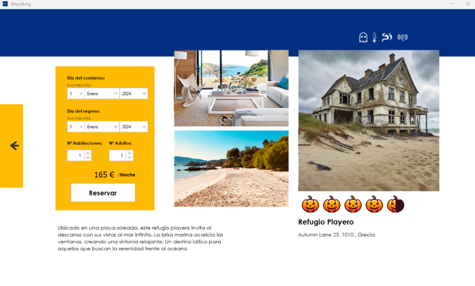
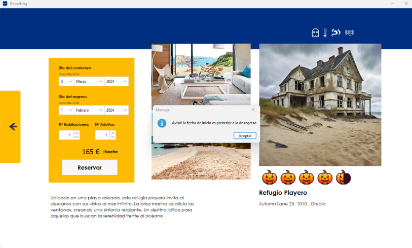
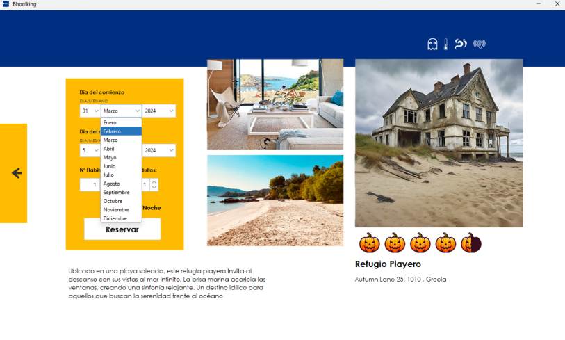
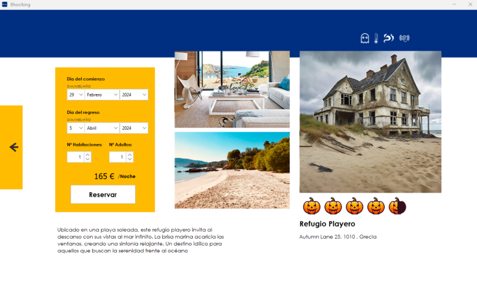
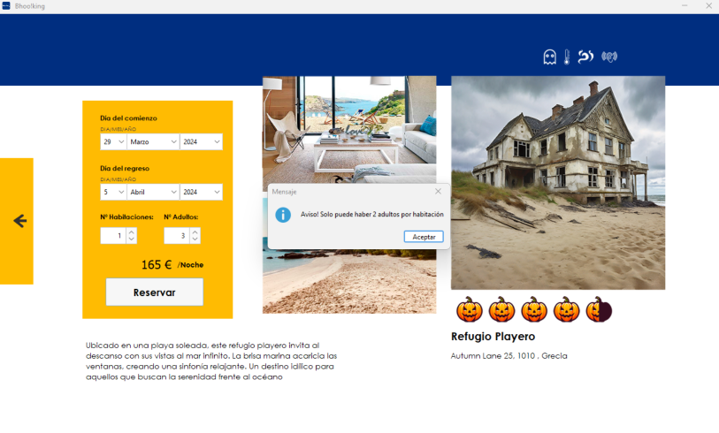
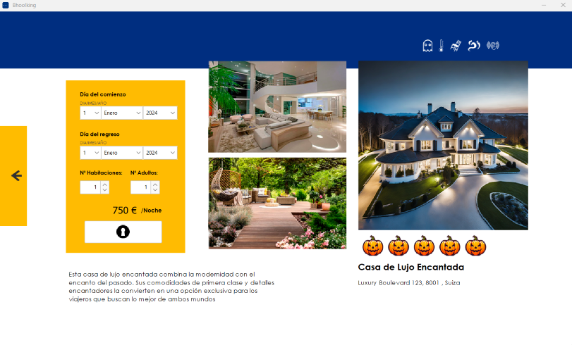
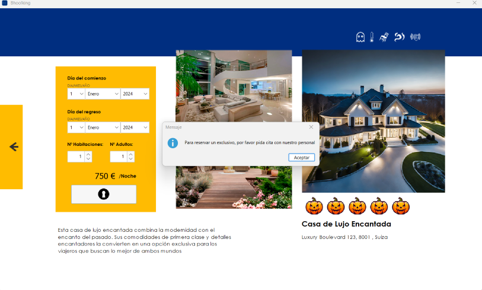

Reserva
Selección de Fechas
Para iniciar el proceso de reserva, selecciona la fecha de inicio de tu estadía eligiendo el día, el mes y el año.
Luego, selecciona la fecha de regreso, asegurándote de que sea posterior a la fecha de inicio



Gestión de Meses y Días
Si seleccionas un mes que tiene más días que el mes anterior, se guarda temporalmente la selección para facilitar el acceso al siguiente mes.
Por ejemplo, si eliges el 15 de abril y luego decides seleccionar el 15 de marzo, la aplicación recordará temporalmente tu elección.


Duración de la Estancia
El máximo de días permitidos para una reserva es de 45 días.
Ocupación de Habitaciones
Cada habitación tiene una capacidad máxima de 2 adultos.

Imágenes del Hotel
La página de reserva mostrará tres imágenes del hotel para brindar una vista detallada y atractiva.
Calificación del Hotel
La calificación del hotel se representa mediante calabazas, de 0 a 5, similar a las estrellas de clasificación estándar.
Encantamientos del Hotel
Se proporcionan seis encantamientos que indican las características especiales del hotel. Estos se presentan de manera clara y detallada para ayudarte a tomar decisiones informadas.
Mansiones Exclusivas
Hay dos mansiones exclusivas que no se pueden reservar directamente a través de la plataforma. Si estás interesado en estas opciones, se te animará a ponerte en contacto con el personal del hotel para discutir los detalles y hacer arreglos personalizados.

